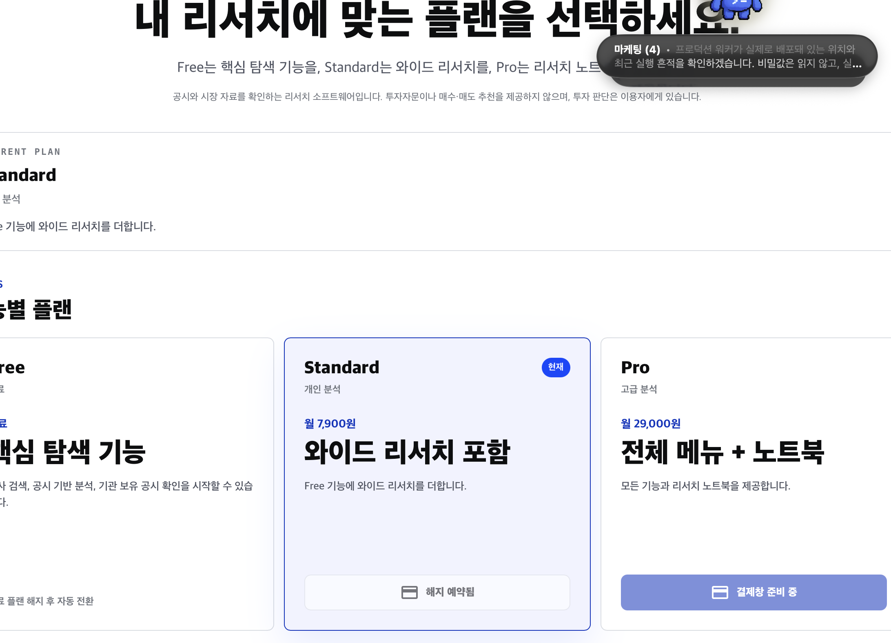
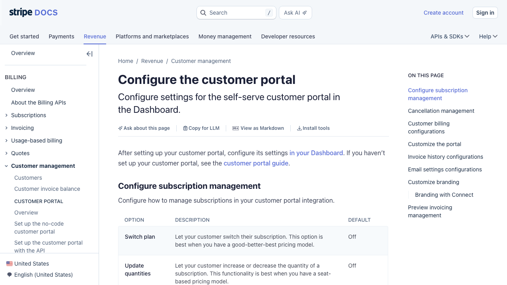
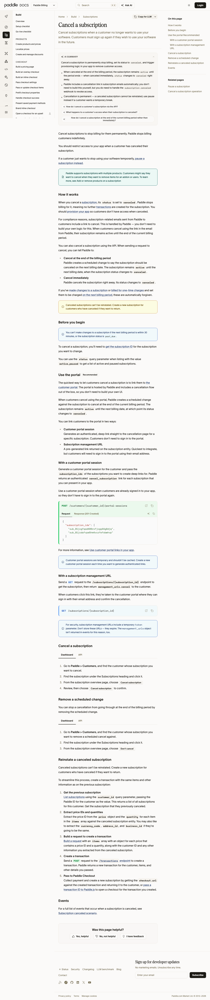
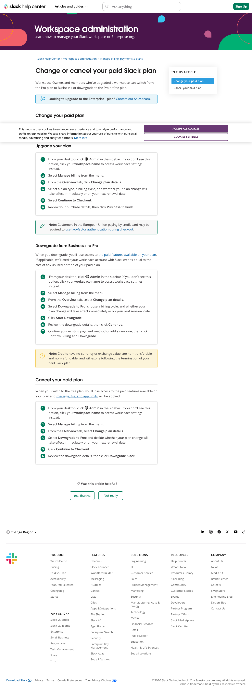

Subscription UX simulation · 2026-07-30
KRW Ontology 결제 상태 흐름
신규 구독, 플랜 변경, 해지 예약, 재활성화, 결제 실패까지 사용자 관점에서 시뮬레이션하고 현재 구현과 권장 흐름을 비교했다.
TL;DR
결론은 “결제 버튼”보다 “구독 상태”를 먼저 설계해야 한다. 현재처럼 모든 비활성 상태를 “결제창 준비 중”으로 표현하면 사용자는 토스 장애, 카드 문제, 해지 예약을 구분할 수 없다. 화면 상단에 현재 구독 상태와 다음 날짜를 명확히 보여주고, 플랜 카드의 CTA는 그 상태에서 가능한 단 하나의 다음 행동만 제시하는 구조가 가장 이해하기 쉽다.
현재 상태

cancelAtPeriodEnd 상태가 플랜 변경을
차단한 것이다.
이 문구는 사용자를 잘못된 해결책으로 유도한다. 새로고침하거나 기다려도 해지 예약은 풀리지 않으므로, 사용자는 결제 시스템이 고장 났다고 인식하게 된다.
권장 정보 구조
플랜 카드 세 장에 구독 상태를 분산시키지 말고, 상단의 “내 구독” 카드가 상태의 단일 진실 공급원이 되어야 한다. 플랜 카드는 비교와 선택만 담당한다.
┌─────────────────────────────────────────────────────┐ │ 내 구독 │ │ Standard · 월 7,900원 │ │ 2026년 8월 30일 해지 예정 · 그날까지 모든 기능 사용 │ │ │ │ [계속 구독하기] [결제 내역 / 관리] │ └─────────────────────────────────────────────────────┘ Free Standard Pro 무료 현재 플랜 월 29,000원 [전환일 안내] [현재 사용 중] [Pro로 업그레이드] Pro 클릭 시 확인창: “해지 예약이 취소되고 Pro가 즉시 적용됩니다.” 오늘 결제: 12,345원 다음 결제: 8월 30일 29,000원 [돌아가기] [해지 취소하고 Pro 시작]
“해지 예약 취소”를 먼저 시킨 뒤 다시 Pro를 고르게 하는 2단계도 안전하지만, 사용자 경험상 가장 좋은 흐름은 Pro 선택 한 번으로 “해지 예약 취소 + 업그레이드” 결과를 미리 보여주고 한 번 더 확인받는 것이다.
상태별 CTA 규칙
| 구독 상태 | 사용자에게 보여줄 말 | 가능한 행동 | 피해야 할 행동 |
|---|---|---|---|
| Free | 현재 Free 이용 중 | Standard 또는 Pro 구독 | 토스 SDK가 뜨기도 전에 “처리 중” 표시 |
| Active Standard | 다음 결제일과 7,900원 | Pro 즉시 업그레이드, 해지 예약 | 업그레이드 금액을 숨긴 채 즉시 청구 |
| Active Pro | 다음 결제일과 29,000원 | Standard 다음 갱신일 변경, 해지 예약 | 다운그레이드를 즉시 적용해 기능을 갑자기 회수 |
| Pending downgrade | “8월 30일 Standard로 변경 예정” | 변경 예약 취소 | 대상 플랜 카드만 회색 처리하고 이유 생략 |
| Pending cancel | “8월 30일 해지 예정” | 계속 구독, 다른 유료 플랜으로 변경 | “결제창 준비 중” 또는 영구 비활성 버튼 |
| Grace / Past due | “결제를 완료해야 구독이 유지됩니다” | 결제수단 변경, 결제 재시도 | 새 구독 생성이나 플랜 변경 |
| Processing | “결제 확인 중 · 다시 결제하지 마세요” | 상태 자동 확인, 안전한 새로고침 | 재시도 버튼으로 중복 결제 불안 유발 |
| Canceled / Expired | Free 전환 완료와 종료일 | 새 구독으로 다시 시작 | 삭제된 빌링키로 기존 구독 변경 시도 |
상황별 시뮬레이션
Free → Standard 첫 구독
- 버튼에 “Standard 시작 · 월 7,900원”을 표시한다.
- 확인창에서 오늘 결제액, 다음 결제일, 자동결제임을 먼저 고지한다.
- 그 다음에만 토스 카드 등록창을 연다.
- 리다이렉트 뒤에는 “결제 확인 중”을 잠깐 보여주고 서버 확정 후 성공 화면으로 간다.
Standard → Pro 업그레이드
- 서버가 남은 기간의 차액을 미리 계산한다.
- “오늘 12,345원, 다음 갱신일 29,000원”처럼 실제 금액을 확인창에 보여준다.
- 확인 후 저장된 빌링키로 청구하고 Pro를 즉시 적용한다.
- 실패하면 Standard와 기존 결제일을 그대로 유지한다.
Pro → Standard 다운그레이드
- 오늘 청구는 없고 다음 갱신일부터 적용됨을 표시한다.
- 잃게 되는 기능과 정확한 적용일을 확인창에 보여준다.
- 예약 후 상단 상태를 “Standard로 변경 예정”으로 바꾼다.
- 언제든 “변경 예약 취소”가 가능해야 한다.
해지 예약 후 마음이 바뀜
- “계속 구독하기”를 누르면 해지 예약만 해제한다.
- 오늘 추가 결제는 없고 기존 결제일과 카드가 유지됨을 알려준다.
- 상태가 즉시 Active로 돌아오고 성공 배너를 보여준다.
Standard 해지 예약 중 Pro 선택
- Pro 버튼은 비활성화하지 않는다.
- 확인창에 “해지 예약이 취소되고 Pro가 즉시 적용”된다고 표시한다.
- 차액 청구가 성공한 뒤에만 해지 예약 해제와 Pro 적용을 확정한다.
- 차액 결제가 실패하면 기존 해지 예약을 그대로 유지한다.
다운그레이드 예약 후 해지
- 해지 확인창에서 기존 다운그레이드 예약이 사라진다는 점을 함께 알린다.
- 해지를 확정하면 “해지 예정” 하나의 예약 상태만 남긴다.
- 사용자가 해지를 다시 취소하면 원래 현재 플랜으로 복귀한다. 이전 다운그레이드 예약은 자동 복구하지 않는다.
카드 거절·한도 부족·만료
- 플랜 변경 실패와 결제수단 문제를 구분한다.
- 기존 플랜을 유지하고 “결제수단 변경”을 가장 강한 CTA로 보여준다.
- 새 카드를 등록한 뒤 실패한 동일 주문을 idempotency key로 재시도한다.
- 결제 후 반영이 지연되면 “확인 중” 상태로 두고 새 결제를 유도하지 않는다.
토스 창에서 사용자가 취소
- 실패가 아니라 중립적인 “결제가 취소되었습니다. 청구되지 않았습니다.”를 보여준다.
- 선택했던 플랜과 가격을 유지한 채 다시 시도할 수 있게 한다.
PAY_PROCESS_CANCELED와 카드 거절 메시지를 같은 빨간 오류로 처리하지 않는다.
토스 결제 중 로그인 세션 만료
- 브라우저 로그인 쿠키만 믿지 말고, 시작 시 생성한 결제 세션과 서명된 일회성 상태로 콜백을 복구한다.
- 재로그인이 필요하면 결제 확정 상태를 서버에 보관한 뒤 로그인 후 결과 화면으로 복귀한다.
- 일회성
authKey를 일반적인nextURL에 그대로 넣지 않는다.
더블클릭·두 탭·네트워크 재시도
- 클라이언트는 모든 플랜 CTA를 하나의 전역 처리 상태로 묶는다.
- 서버는 열린 checkout session을 하나만 허용한다.
- 결제 승인과 플랜 반영은 동일 주문·동일 결제 식별자로 재실행 가능해야 한다.
- 사용자는 “중복 청구되지 않습니다”보다 “결제 확인 중”이라는 행동 지침을 먼저 본다.
현재 구현과의 차이
서버 결제 안전장치
- 업그레이드 차액을 서버에서 계산한다.
- 다운그레이드는 다음 갱신일로 예약한다.
- 해지는 결제 기간 끝에 적용한다.
- 결제 세션과 결제 레코드를 이용해 중복 처리를 방지한다.
상태와 문구가 분리되지 않음
- 해지 예약을 취소하는 API와 CTA가 없다.
- 업그레이드가 금액 확인 없이 즉시 청구된다.
- 해지 예약이 “결제창 준비 중”으로 보인다.
- Grace/Past due의 결제수단 변경 흐름이 없다.
- 로그인 만료 시 성공 콜백을 이어가기 어렵다.
실행 우선순위
해지 예약 상태 복구: “계속 구독하기” API·CTA를 추가하고, 해지 예약 중 다른 플랜 선택 시 결과와 금액을 확인받는다. 동시에 “결제창 준비 중” 오표시를 제거한다.
금전 동의 확인: 업그레이드 미리보기 API를 만들고 오늘 청구액, 다음 결제액, 적용일을 모달에서 확인한 뒤 청구한다. 해지도 날짜와 유지되는 이용 기간을 확인받는다.
콜백 복구: 결제 중 로그인 만료와 결제 후 반영 지연을 안전하게 이어가는 서버 주도 상태 확인 흐름을 만든다.
결제수단 변경: Grace/Past due에서 새 빌링키 등록과 미수 결제 재시도를 제공한다. 이 상태에서는 플랜 변경보다 결제 복구가 우선이다.
하나의 상태 모델: UI에서 조건식을 흩뿌리지 않고
active | pending_change | pending_cancel | past_due | processing | canceled
별 뷰 모델을 만들어 CTA, 설명, 비활성 이유를 한곳에서 결정한다.
사후 신뢰: 영수증, 다음 결제일, 예약 변경 내역, 실패 사유, 이메일 안내를 결제 내역 화면에서 확인할 수 있게 한다.
회귀 테스트 체크리스트
- Free → Standard 정상 결제와 Toss 사용자 취소
- Free → Pro 카드 거절 후 재시도
- Standard → Pro 기간 시작일·중간·마지막 날 차액 계산
- 업그레이드 청구 성공 후 DB 반영 지연과 자동 복구
- Pro → Standard 예약과 예약 취소
- 해지 예약 후 같은 플랜 계속 구독
- 해지 예약 후 상위 플랜 변경 성공·결제 실패
- 다운그레이드 예약 후 해지
- Grace/Past due에서 결제수단 변경과 미수금 재시도
- 결제 도중 로그인 만료·브라우저 뒤로가기·새로고침
- 더블클릭·두 탭·동일 요청 재전송
- 기간 종료 후 Free 전환과 신규 재구독
References
Pattern A: 플랜 변경은 별도 구독 관리 행동

Pattern B: 예약 해지는 되돌릴 수 있는 명시적 상태

Pattern C: 적용 시점과 구매 내역을 확인 후 확정
